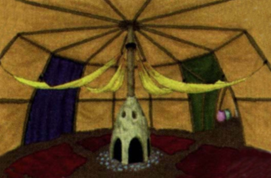
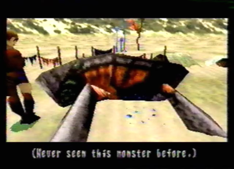
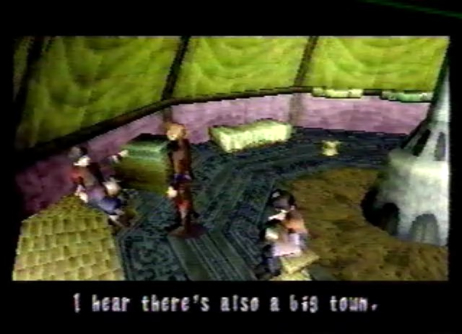
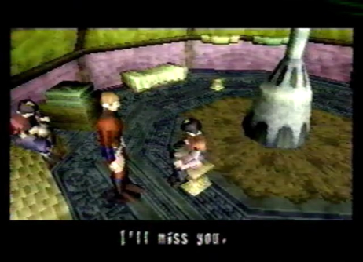
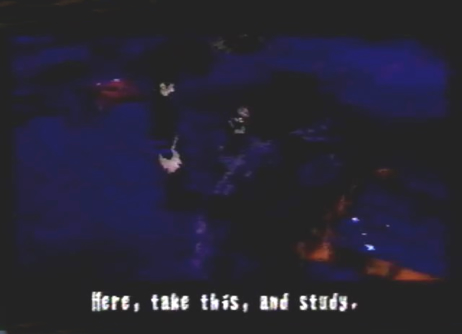
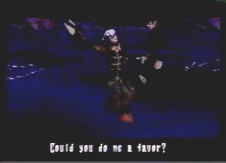
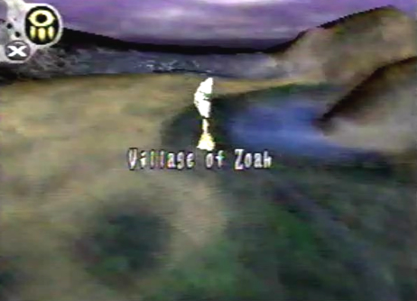

Enemies
Encountered/None |
|
Diary Entry 13: Caravan Visit 2 A Forest Protected by the Power of the Gods After returning from the Forbidden Zone, I headed back to the caravan. When I arrived, I found a monster sprawled out on the ground before me. Enkak told me with much excitement, that his father had brought it back from a successful hunt. Next, I went over to Biahca's shop to sell my useless items I had received from the Forbidden Zone. He was quite happy to take them off my hands for a good amount of Dynes. He also had some new items and gun parts for me. I stocked up on Elixirs and bought this really powerful gun upgrade called the Sniper. Biacah told me it was able to take major damage to any weak point. My next stop was Fei's tent. I had a conversation with her mother Kou. She said the people of the caravan were headed for the Zoah Forest. I told her that there was bound to be monsters there, but she just muttered something about it being protected by the power of the Gods. She also spoke of a large town near the forest, found directly to the east. I thought it a good idea to check it out after my visit. I attempted to talk to her daughter Fei, but she wasn't too happy to talk to a complete stranger. I had to start somewhere, so I didn't stop talking to her until she warmed up to me. I told her I'd be leaving soon, she didn't want me to leave! I guess I had made an impression. At night, I observed An'jou as he readied the innards of the monster he had killed for medicines and antidotes. He said he recently heard rumors that a dragon was fighting against the Imperial Forces. Only if he knew, the person whom was fighting along side that dragon was standing right next to him! But I couldn't bring myself to tell him. I pretended to not know what he was talking about. He said I should be more religious and gave me a Dragon Bible. After chatting with An'jou, I headed out back to see what Raul was up to. He was on guard duty as usual. He asked me to do him a favor. I agreed and he handed me an item called the Verato Pipe. He told me to give it to any survivors I may find from the village Verato. I agreed and left for the Town of Zoah, when the light of morning beamed out from the horizon.  |
|
| Divine
Overview |
 1. Notice the monster found on the ground, Its internal illuminated rocks are used as currency. |
2. Head over to Baicha's shop, he has some new items and gun upgrades for you. Stock up on Elixirs and if you have enough money, buy the Sniper gun upgrade, it's essential if you want to take major damage to any enemies weak point. |
 3. Talk to Fei's mother Kou, she will tell you about a large town located near the Forest of Zoah. This is your next destination, the Village of Zoah. |
 4. Talk to Kou's daughter Fei. At first she will act coldly towards you, but if you talk to her multiple times, she will eventually start talking to you. Gain her trust and attention. When she starts saying things like "You will be leaving soon. I will miss you," you now know you have earned her affection. This is the first step you need to take if you want to receive the Palmer Amulet, which you can get before going to Uru. |
 5. At night, talk to An'jou who is retrieving the innards from the newly acquired monster. He will tell you that you should read up on your religion and will give you the Dragon Bible. |
 6. After talking to An'jou, head to the back and talk to Raul. He will ask you for a favor. He wants you to give the Verato Pipe to any survivors you may find from the village Verato. Agree to help him. I will explain the next step for this side quest, once you get to the Village of Zoah. |
 7. That's it for now, head off to the Village of Zoah. Although I don't know why it's called the Village of Zoah on the World Map, when Kou just said it was a large town, but whatever. |